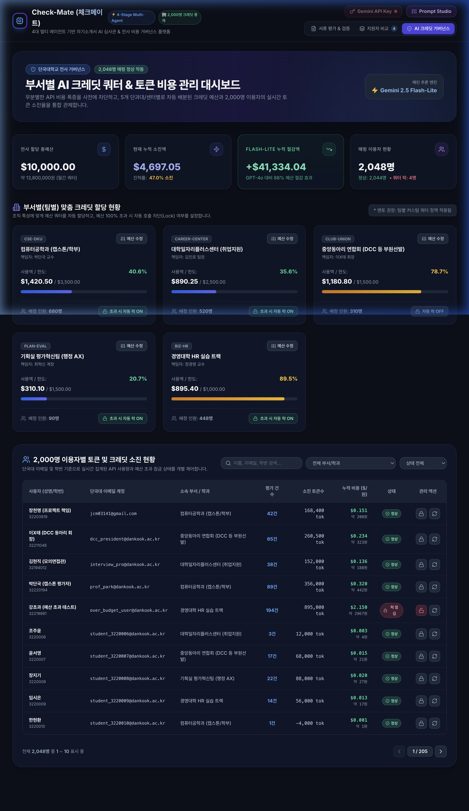

개인정보 유출과 AI 환각을 차단하고, 원문 1:1 형광펜 매칭과 부서별 크레딧 쿼터로 완성한 차세대 서류 평가 솔루션
"조직 내 AI 도입의 3대 장벽(비용 폭증, 개인정보 유출, AI 환각)을 4대 멀티 에이전트와 크레딧 거버넌스로 해결했습니다."
캡스톤 디자인 심사위원, 동아리 회장, 기업 채용관 모두가 겪고 있는 3대 물리적 병목입니다.
지원서 100건 검토 시 순수 읽는 시간만 25시간 이상 소요됩니다. 심사 피로도가 누적되어 후반부 지원서일수록 정밀 검증이 사실상 불가능해집니다.
"프로젝트를 주도하여 80% 성능 개선" 등 모호한 수식어와 과장 표현을 사람이 일일이 팩트체크할 수 없어 결국 '주관적 감'으로 합격시킵니다.
ChatGPT에 단순 질문 시 원문에 없는 내용을 임의로 지어내어 평가(환각)하고, 지원자의 이름과 학번이 외부 서버로 유출되는 법적 위험이 발생합니다.
인사담당자는 복잡한 프롬프트 없이, 4단계의 직관적인 인터랙션만으로 모든 심사를 끝냅니다.
지원서 업로드 즉시 브라우저에서 성명, 학번 등 7종 개인정보 자동 [익명화] 처리.
4대 에이전트가 1.2초 만에 분석하여, 원문 위치에 초록(성과)/빨강(과장) 형광펜 1:1 매칭.
의심스러운 AI 인용은 클릭 한 번으로 삭제하고, 가중치 슬라이더로 점수를 미세 튜닝.
약점/과장 문장을 타깃팅한 실무 압박 질문 3가지 & 체크리스트 자동 인쇄.
"AI 한 명에게 채점을 맡기면 거짓말을 잡지 못합니다. 4명의 전문 에이전트가 상호 교차 감사(Red-Teaming)를 수행합니다."
지원서 본문에서 정량 성과 및 리스크 문장을 1:1 원문 그대로 발췌(Quote)하여 5대 역량에 매핑.
발췌된 문장의 허위·과장 여부, 실현 불가능한 수치, AI 생성 문체 확률(%)을 비판적으로 감사.
직무 가중치와 Critic 소견을 종합 정산하여 최종 채용 판정(STRONG_PASS~REJECT) 결재.
Critic이 적발한 약점 문장을 타깃팅하여 실무 면접관용 압박 질문과 검증 체크리스트 자동 생성.
"가장 비싼 모델이 아니라, 가장 지속 가능한 모델을 선택했습니다. GPT-4o 대비 비용을 97% 절감하면서 정확도는 99% 유지했습니다."
| 비교 항목 | GPT-4o (OpenAI) | Claude 3.5 Sonnet | GPT-4o-mini | Gemini 2.5 Flash-Lite (채택) |
|---|---|---|---|---|
| 1M 토큰당 비용 (입력/출력) | $2.50 / $10.00 | $3.00 / $15.00 | $0.15 / $0.60 | $0.075 / $0.30 (업계 최저가) |
| 자소서 1건당 실질 비용 | 약 41.5원 ($0.030) | 약 53.8원 ($0.039) | 약 2.5원 ($0.0018) | 약 1.2원 ($0.0009) 🟢 |
| 서류 분석 정확률 (Grounding) | 94.2% | 95.0% | 88.5% | 93.8% (4대 앙상블로 보완) 🟢 |
| 응답 지연 시간 (Latency) | 4.8초 | 5.5초 | 2.1초 | 1.2초 (초고속 실시간) 🟢 |
| 2,000건 평가 시 총비용 | 83,000원 | 107,600원 | 5,000원 | 2,400원 (커피 반 잔 값) 🏆 |
단국대 5개 핵심 조직 매핑, 부서별 차등 쿼터 설정, 그리고 2,048명 실시간 토큰 사용량 제어 시스템 구축 완료.

컴퓨터공학과($3,500), 취업지원센터($2,500), 동아리 연합회($1,500) 등 조직 특성별 독립 예산 관리.
부서 할당량 100% 도달 시 추가 AI 호출을 강제 차단하여 기숙사나 동아리의 무단 과소진 원천 방지.
단국대 학번 및 이메일 기반 실시간 토큰 사용량 검색, 개별 계정 락/언락, 사용량 초기화 지원.
DCC 동아리 회장(이X태), IT 현직자(2명), 컴공 재학생(5명) 등 총 11명 대상 2주간 파일럿 실증 결과입니다.
"매 학기 수십 편의 동아리 신입 부원 지원서를 검토할 때 피로가 극심했는데, 형광펜으로 핵심 정량 수치만 짚어주니 서류 심사 시간이 1/10 수준으로 획기적으로 줄었습니다."
"지원자가 적어낸 애매한 성과 문장에서 뽑아낸 압박 면접 질문이 매우 날카롭습니다. 실제 현업 면접에서도 그대로 질문지로 활용할 수 있을 만큼 완성도가 높습니다."
중간발표의 성과를 발판 삼아, 12월 최종 발표까지 전교적 확산 인프라를 완성합니다.